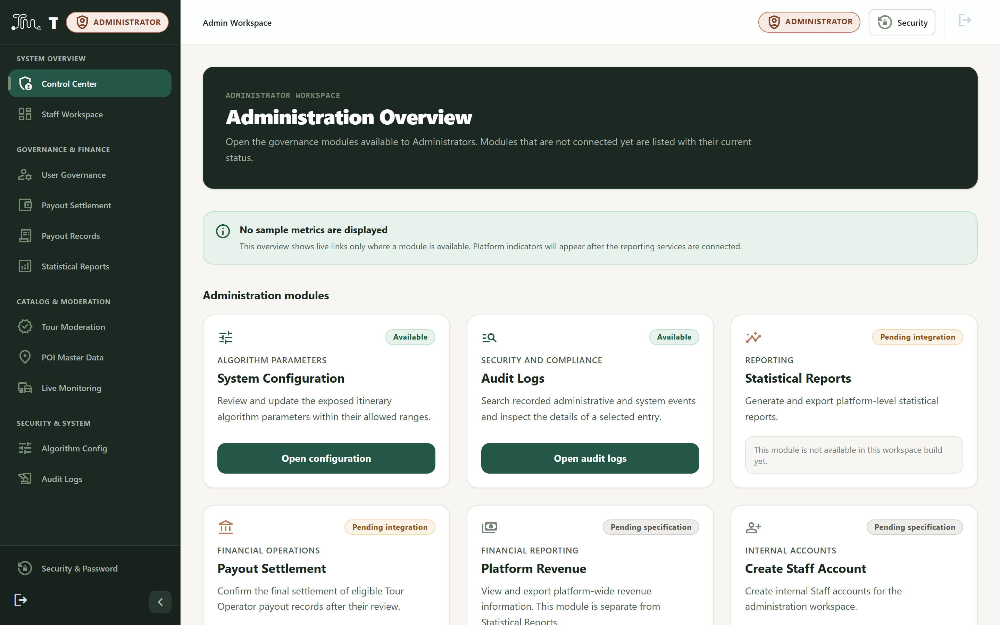
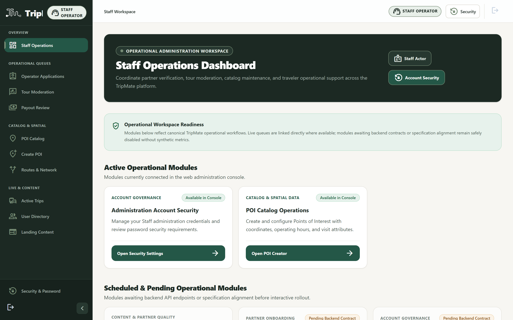
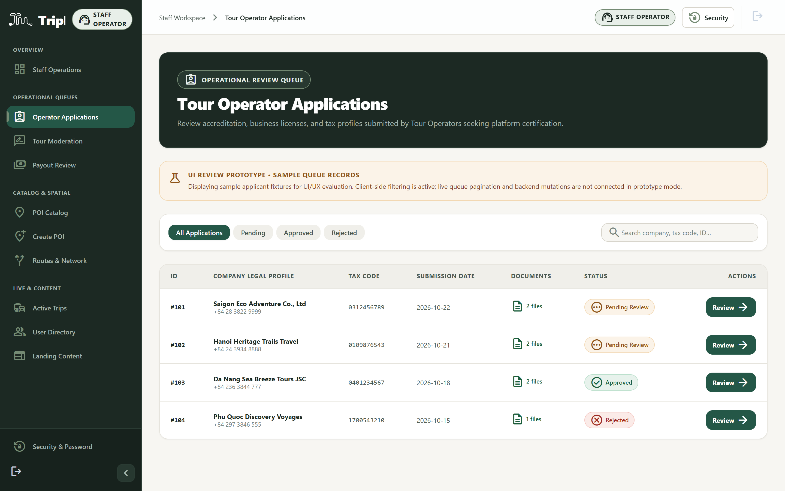
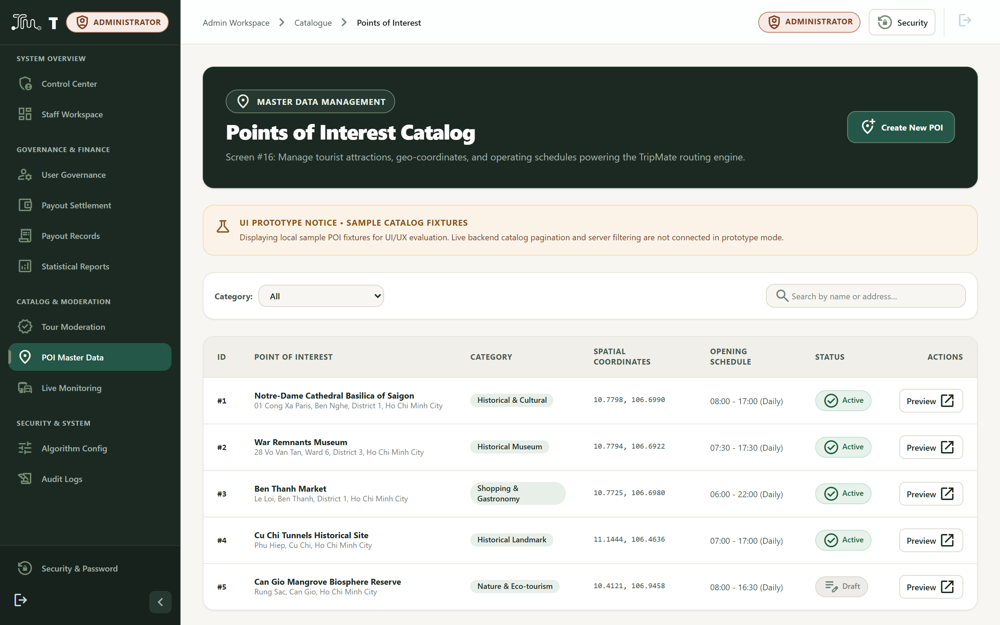
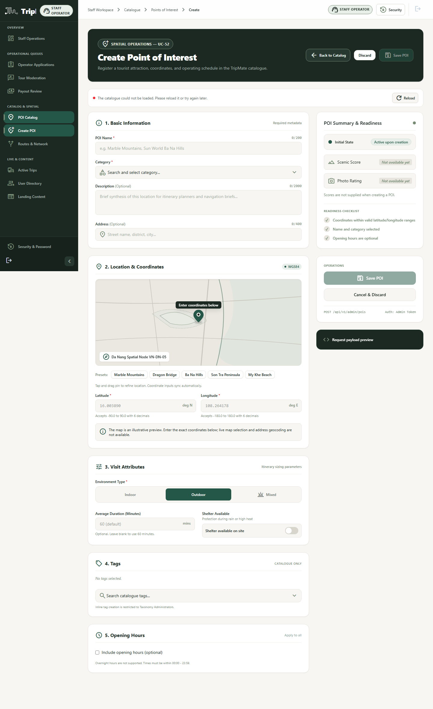
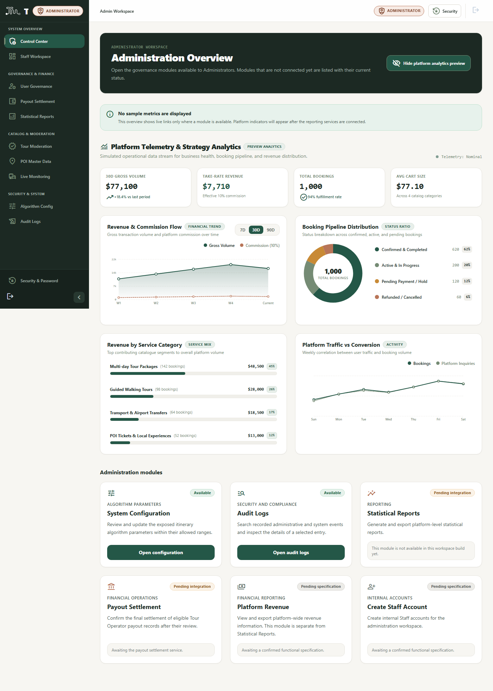

Batch I1: Admin Core & User Management
Screens #2–#9, #23, #35, #36
Screen #2
UI_PARTIAL
Administration Login
/admin/login
So sánh Hiện tại vs Mục tiêu đồng bộ:
Trang đăng nhập duy nhất cho cả Admin & Staff. Sẽ được đổi màu nút từ xanh dương
#1D4ED8 sang xanh lá Deep Forest #245747 và nền Warm Ivory trong Batch I1.
Screen #3
UI_COMPLETE
Administration Reset Password
/admin/forgot-password
Reset Password
Enter your administrative email
Send Reset Link
Provides password recovery flow for Admin and Staff with email validation and rate-limiting notice.
Screen #4
UI_COMPLETE
Administration Change Password
/admin/account/security
Security Settings
Change account password
Change Password form with client-side credential strength validation and current credential check.
Screen #5
UI_COMPLETE
Admin Dashboard
/admin

Approved Batch E executive dashboard with revenue metrics, active users, system health, and analytics tabs.
Screen #35
UI_COMPLETE
Staff Dashboard
/admin/staff

Approved Batch E operations dashboard with review queues summary, live workload indicators, and quick action shortcuts.
Screens #6–#9
UI_MISSING
User Accounts List & Lock/Unlock
/admin/users & /[userId]
🚧
Placeholder UnavailableView
User directory and details currently render unavailable stubs.
Batch I1 Priority: Replace stubs with full directory presentation, user profile cards, and accessible lock/unlock confirmation dialogs.
Screen #36
UI_MISSING
Create Staff Account
/admin/staff-accounts/new
Form allowing Administrator to create internal Staff members with role permissions.
Screen #23
UI_PARTIAL
Algorithm Parameters Configuration
/admin/settings/algorithm-parameters
Clustering Radius & Speed Parameters
Sliders currently styled in blue; needs Forest Green refactoring.
Functional parameters form with live validation; needs alignment to Forest Green and Warm Ivory tokens.
Batch I2: Catalogue, Route & Tour Moderation
Screens #10–#22, #24–#27
Screen #10
UI_COMPLETE
Pending Operator Applications List
/admin/tour-operator-applications

Complete operational queue with search, status filtering, sortable columns, and review triggers.
Screen #11 & #12
UI_PARTIAL
Operator Application Details & Rejection
/admin/tour-operator-applications/[userId]
Business License PDF Preview • Tax Code Validation
Dossier inspection and rejection modal. Needs history display and resolution of AMB-01.
Screens #13–#15
UI_PARTIAL
Pending Tour Posts & Review Details
/admin/tours/reviews & /[id]
Itinerary accordions, safety criteria checklist, approval / rejection modals.
Functional review queue; needs card retheming to Forest & Warm Ivory and resolution of AMB-02.
Screen #16
UI_COMPLETE
POIs & Master Data List
/admin/catalogue/points-of-interest

Complete POI directory with category filters, coordinate displays, search, and action triggers.
Screens #17–#19
UI_PARTIAL
Create / Update / Remove POI
/admin/catalogue/points-of-interest/new

Create POI form is verified. Missing edit route (`.../[id]/edit`) and deactivation confirmation modal.
Screens #20–#22
UI_MISSING
Routes List & Create/Update Route
/admin/routes & /routes/create
🚧
Placeholder UnavailableView
Routes directory and create screens render placeholder stubs.
Requires route network table, origin-destination pickers, and edit route view.
Screens #24 & #25
UI_PARTIAL
Active Trips Monitor & Details
/admin/trips/active & /[id]
Active Trips Monitor (Legacy Theme)
Ongoing trips, simulated GPS trail, incident log.
Functional tracking view with GPS breadcrumbs; needs retheming to Forest & Warm Ivory tokens.
Screens #26 & #27
UI_PARTIAL
Platform Bookings List & Details
/admin/bookings
Platform Bookings (Omitted from Sidebar)
Transactions list exists; missing details drawer (Screen #27).
Needs sidebar link under Operations, drawer for Screen #27, and retheming to Forest & Warm Ivory.
Batch I3: Finance, Reports, Audit & Content
Screens #28–#34, #37–#41
Screens #28, #29, #39–#41
UI_PARTIAL
Payout Records, Review & Verification
/admin/payouts & /[payoutId]
Payout Records (Legacy Navy Theme)
Banking details verification, commission calculations.
Functional verification view; needs retheming to Forest & Warm Ivory tokens.
Screen #30
UI_MISSING
Confirm Payout Settlement
/admin/payouts/settlement
🚧
Placeholder UnavailableView
Payout settlement batch processing is currently unavailable.
Batch I3 Priority: Replace stub with monthly settlement batch execution preview without fake banking execution.
Screens #37 & #38
UI_COMPLETE
Platform Revenue Report & Export
/admin (Revenue Tab)

Merged Batch E platform-wide financial analytics, booking GMV, refunds, platform commissions, and payout releases.
Screen #31
UI_PARTIAL
Landing Page Content Management
/admin/landing-content
CMS Editor (Legacy Dark Navy)
Hero banners, destination showcase, testimonials.
Functional CMS editor; needs full migration to Warm Ivory canvas and Forest Green action buttons.
Screen #32
UI_PARTIAL
Statistical Reports
/admin/reports
BI Reports & Charts (Dark Theme)
Platform statistics and export triggers.
Functional charts; needs migration to Warm Ivory cards and Forest Green chart palettes.
Screens #33 & #34
UI_PARTIAL
System Audit Logs & Inspector
/admin/audit-logs
Security Audit Trail Table
Security logs and JSON payload inspector.
Functional immutable audit trail; needs token alignment to Forest Charcoal and Warm Ivory.